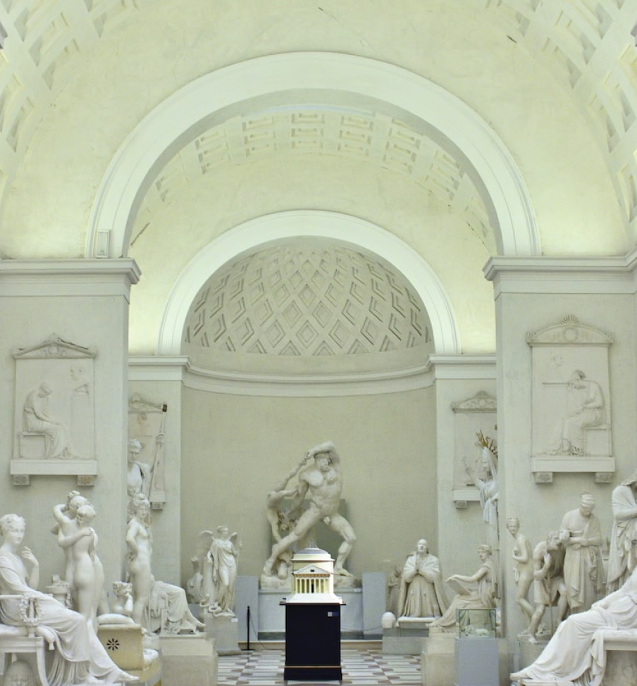

新一季常設展覽多出十九世紀主題，帶您遨遊在新藝術運動的世界。
因應本次新冠疫情，於中央流行疫情指揮中心宣布國門開放前，本館將持續施行藝文推廣專案，所有票價皆調降五十元新台幣。詳細資訊已統一更新於「關於我們 / 票價資訊」內，歡迎各位民眾前來參觀 溯‧REVERSE歷史藝術博物館!
歡迎來到 溯‧REVERSE博物館
2022.03.13 - 2022.06.31
新一季常設展覽多出十九世紀主題，帶您遨遊在新藝術運動的世界。
因應本次新冠疫情，於中央流行疫情指揮中心宣布國門開放前，本館將持續施行藝文推廣專案，所有票價皆調降五十元新台幣。詳細資訊已統一更新於「關於我們 / 票價資訊」內，歡迎各位民眾前來參觀 溯‧REVERSE歷史藝術博物館!
- ＜
- 01
- 02
- 03
- 04
- 05
- ＞